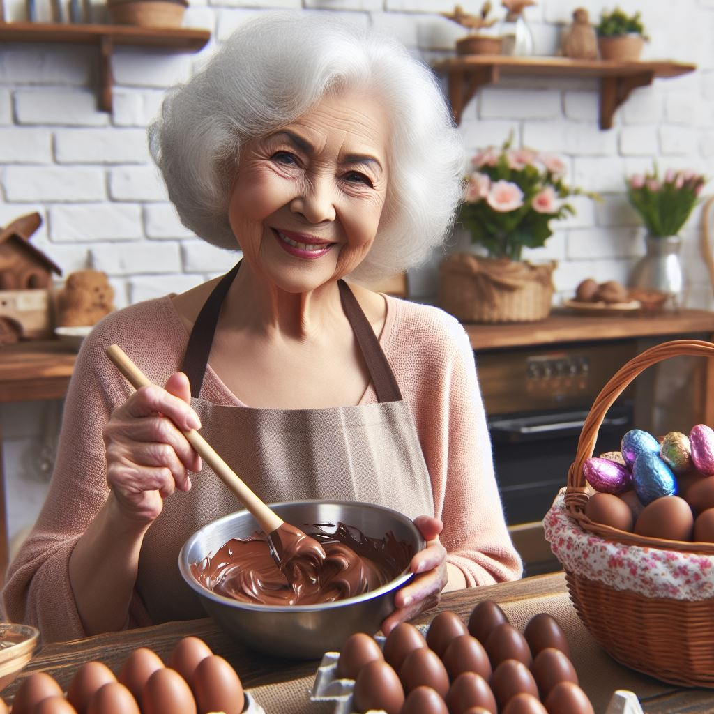
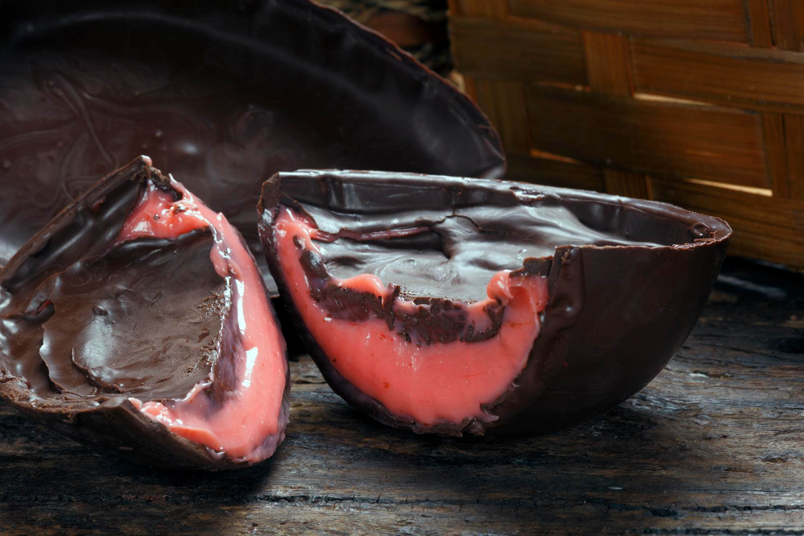
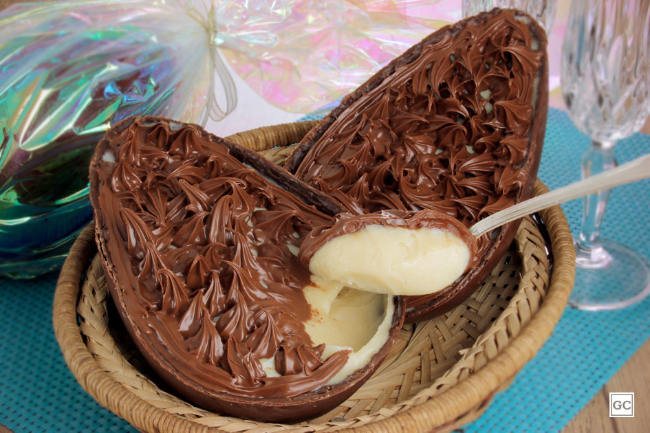
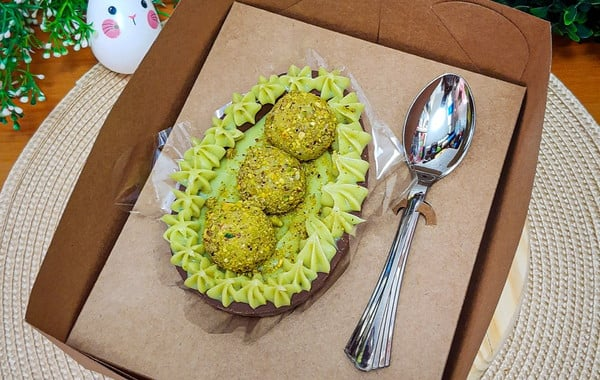
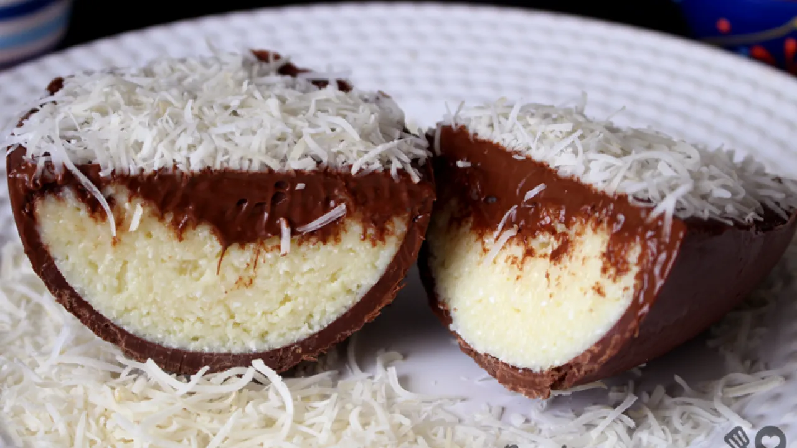

Bem Vindos ao Doces da Zilda!
Desfrute da nossa sessão de Ovos de Páscoa para completar seu feriado!
Todos os Nossos Deliciosos Sabores de Ovos de Páscoa:
| Sabor | Descrição | Preço |
|---|---|---|
| Ovo Trufrado de Morango

|
Um Ovo delicioso recheado com cobertura de morango suave e saborosa e chocolate trufado. Uma delícia irresistivel para animar o seu dia! |
R$69,99 |
|
Ovo de leite ninho com Nutella

|
O ovo de Páscoa de Leite Ninho com Nutella é uma deliciosa combinação de chocolate ao leite recheado com o irresistível sabor do creme de leite em pó e a cremosidade única da Nutella. Cada mordida é uma explosão de sabores, unindo a doçura suave do Leite Ninho com o toque de avelã da Nutella. É a escolha perfeita para quem busca uma experiência de Páscoa única e indulgente. |
R$69,99 |
|
Ovo de Páscoa Brigadeiro de Pistache

|
O ovo de Páscoa brigadeiro de pistache é uma verdadeira tentação para os amantes de chocolate. Feito com um delicioso chocolate ao leite, este ovo é recheado com um cremoso brigadeiro de pistache, que combina perfeitamente o sabor suave do chocolate com o toque de nozes do pistache. Cada pedaço derrete na boca, proporcionando uma experiência única e irresistível. Presentear alguém com este ovo é garantia de surpreender e encantar os paladares mais exigentes nesta Páscoa. |
R$79,99 |
Ovo Trufado de Brigadeiro 
|
O ovo de Páscoa de brigadeiro é uma escolha clássica e irresistível para celebrar a data. Feito com um chocolate ao leite de alta qualidade, este ovo é recheado com um delicioso brigadeiro cremoso, preparado com todo o carinho e tradição. Cada mordida é uma explosão de sabor, combinando a doçura envolvente do chocolate com a cremosidade e o sabor inconfundível do brigadeiro. É a opção perfeita para presentear aqueles que você ama nesta época especial, proporcionando momentos de pura indulgência e felicidade. |
R$59,99 |
|
Ovo de Páscoa de Prestígio 
|
O ovo de Páscoa de prestígio é uma verdadeira delícia para os amantes de coco e chocolate. Feito com um chocolate ao leite cremoso, este ovo é recheado com um delicioso e macio coco ralado misturado com um cremoso brigadeiro de coco. Cada pedaço é uma combinação perfeita de texturas e sabores, proporcionando uma experiência de Páscoa inesquecível. É o presente ideal para quem adora uma doçura clássica e reconfortante nesta época tão especial. |
R$69,99 |